Supporting Coordination and Monitoringin Parallel AI Coding
Microsoft Research AI Frontiers & Columbia University
In Submission
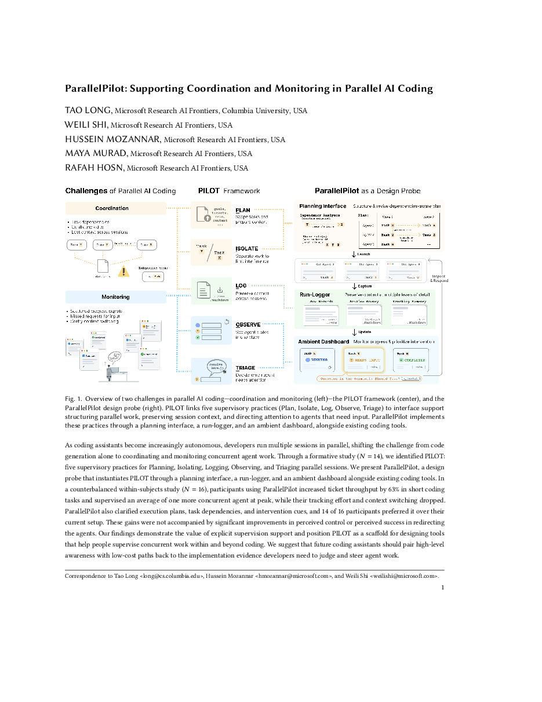
As coding agents grow autonomous, developers run several sessions at once
— this paper studies how they coordinate and monitor that fleet. Questions? Email us
1/ The Gap & Formative Insights: PILOT
AI coding assistants are shifting from autocomplete into autonomous agents, and developers are increasingly running several sessions concurrently rather than working through tickets one at a time. This does not just add more agents—it adds a new layer of coordination and monitoring around them. We interviewed 14 developers who already work this way to understand how they cope, and distilled their strategies into the PILOT framework.
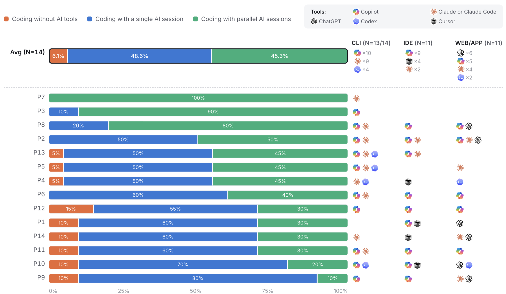
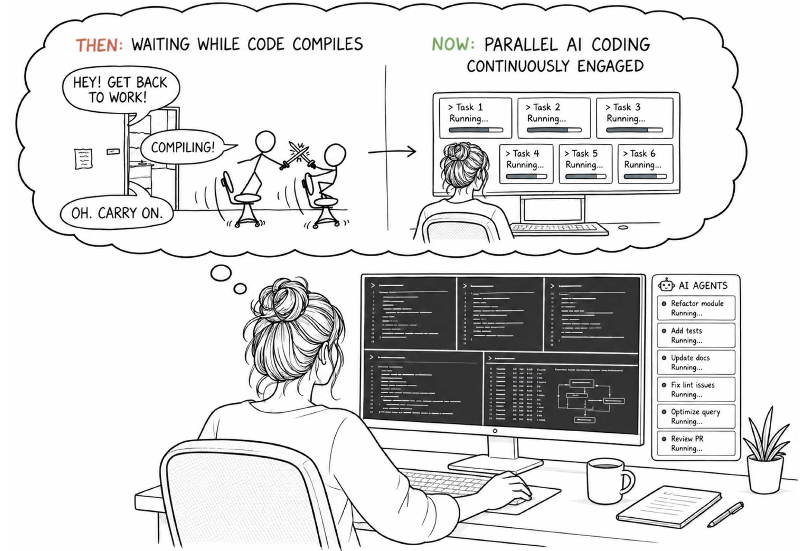
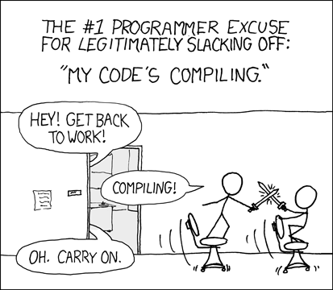
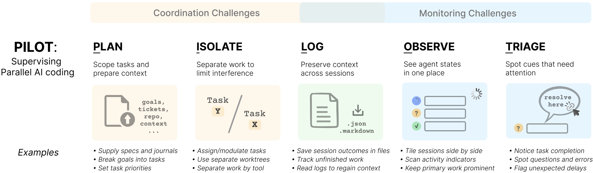
Summary
Developers already build ad hoc "control rooms"—terminal windows, markdown logs, custom dashboards, multi-monitor layouts—to coordinate and monitor parallel agents, but these workarounds stay brittle: sessions stall unnoticed, work gets lost track of, and context is hard to recover after switching away. PILOT synthesizes the five recurring strategies participants used to cope—the foundation for ParallelPilot.
2/ ParallelPilot as a Design Probe
ParallelPilot is a supervision cockpit that instantiates PILOT as a lightweight layer over developers' existing agent CLIs, editors, and workspaces—rather than replacing them. It combines three integrated components, each mapped to complementary parts of PILOT.
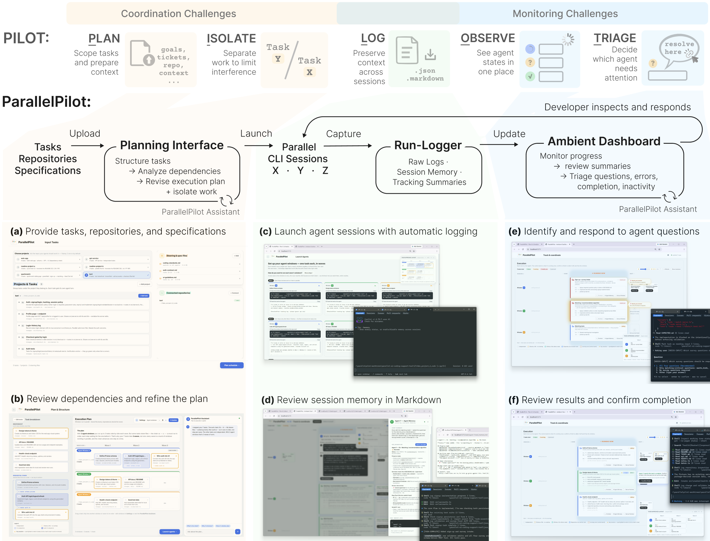
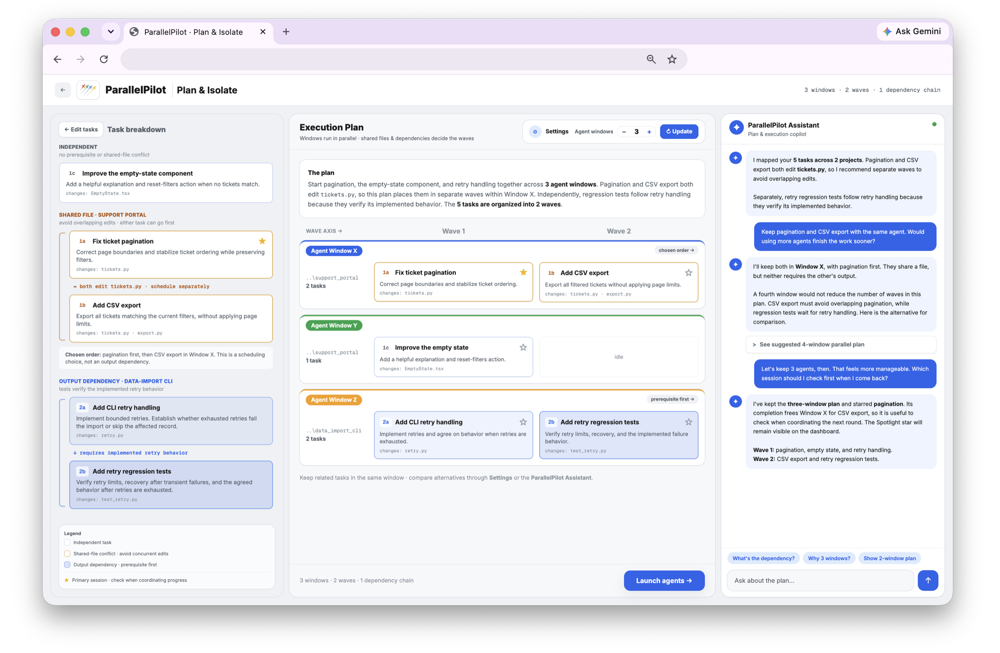
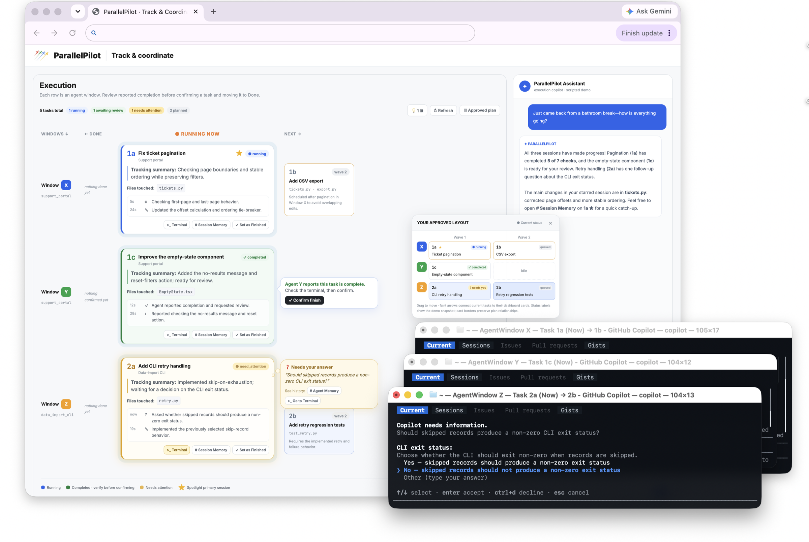
Summary
Rather than another chat client, ParallelPilot is built for the managerial vantage point of supervising a fleet: it externalizes the dependency map before work starts, passively preserves context while it runs, and actively surfaces what needs a human's attention—without asking developers to give up the CLIs and editors they already use.
3/ Study Insights & Discussion
In a counterbalanced within-subjects study, 16 developers completed matched coding tasks with and without ParallelPilot. We measured objective throughput from logs, plus perceived coordination, monitoring, and control from surveys and interviews.
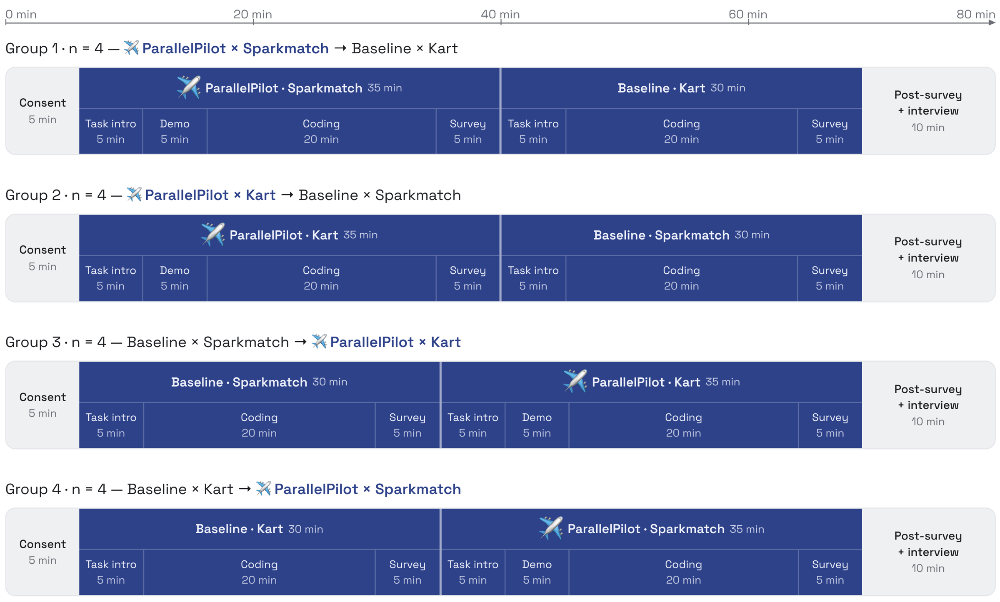
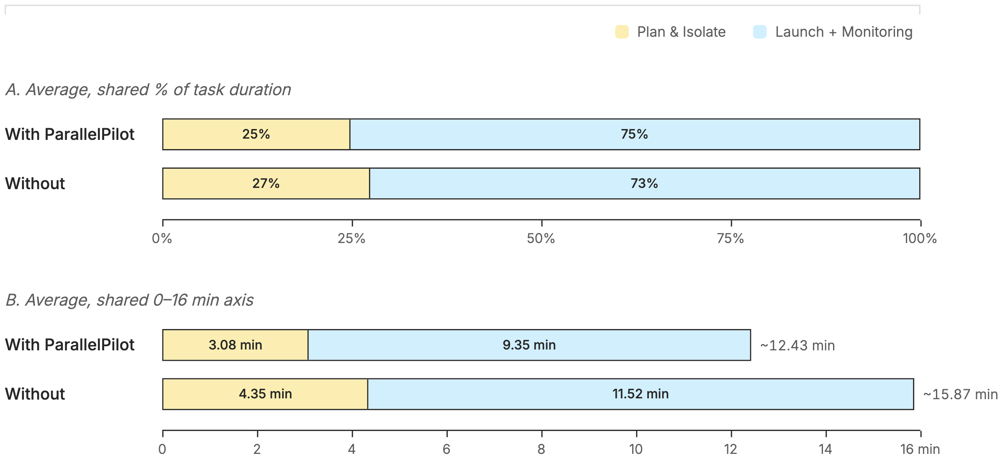
Better attention did not automatically buy back trust
Despite the gains above, perceived control (3.94→4.31) and self-rated intervention success (3.94→4.13) did not significantly improve. Confidence in interventions, output trust, and delegation confidence also stayed flat. When asked which condition made output easier to verify, 9 of 16 participants said no difference.
Making a fleet of agents observable is not the same as making its output verifiable—monitorability and trust are separable design problems.
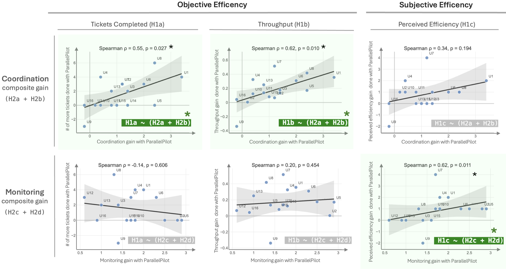
Contributions
- PILOT—an empirically grounded framework of five supervisory practices for parallel AI coding, from a formative study of 14 developers.
- ParallelPilot—a supervision cockpit operationalizing PILOT through dependency-aware planning, run-logging, and an ambient dashboard.
- Empirical evidence from a controlled study (N=16) of higher throughput and lower tracking/context-switching burden—alongside a null result on perceived control that motivates connecting progress awareness to implementation-level evidence.
BibTeX
ParallelPilot is currently in submission. If you'd like to reference this work in the meantime, here's a citation you can use—we'll update it with final venue details once it's published.
@misc{long2026parallelpilot,
author = {Long, Tao and Shi, Weili and Mozannar, Hussein and Murad, Maya and Hosn, Rafah},
title = {ParallelPilot: Supporting Coordination and Monitoring in Parallel AI Coding},
year = {2026},
note = {Under review},
url = {https://iamtaolong.github.io/project_pages/parallelpilot.html}
}